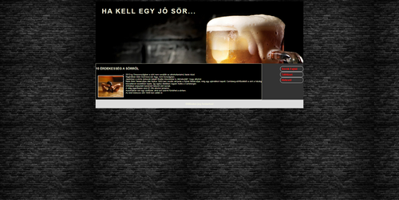
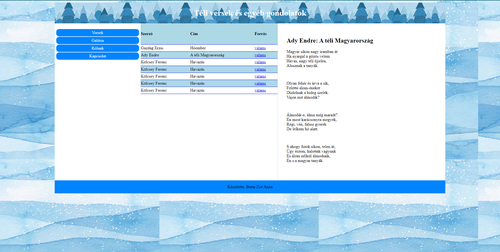
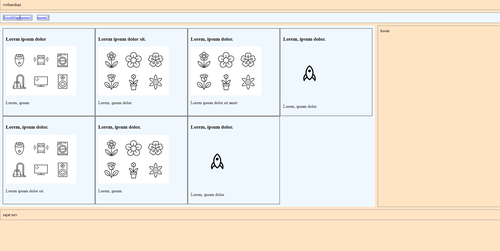

1

Ez volt az első igazi egyedi munkám,ahol megtanultam , hogy milyen egyedül dolgozni. megtanultam,hogy hogyan kell a menüt formázni css-ben és , hogy hogyan kell reszponzív oldalt készíteni.
2

Ezt készítettük legutoljára az órán, ahol megtanultam, hogyan kell táblázatot készíteni és formázni azt.
3

Ez volt a legelső weboldalra hasonlitó munkám, ahol a legnagyobb problémát a grid készítés okozott,mivel akkor foglalkoztunk ezzel előszőr.